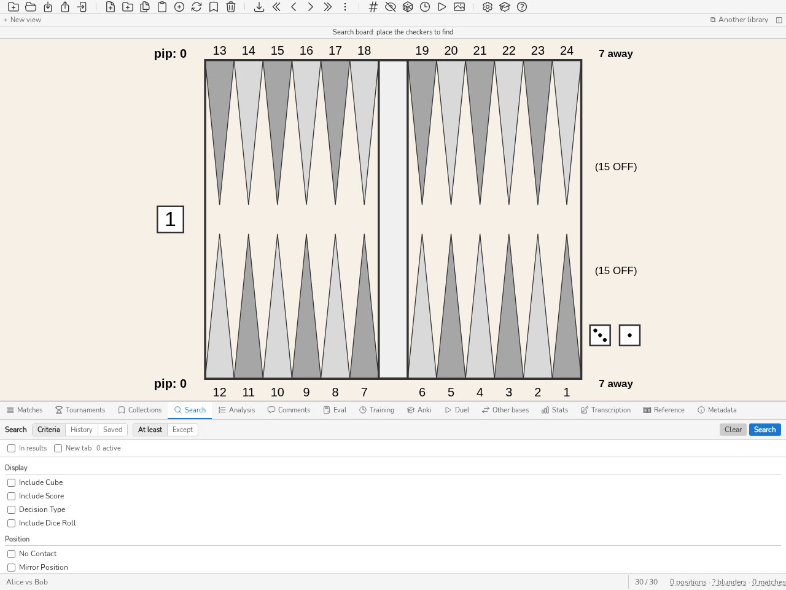

Analyse, Kommentare und Suche
Analyse-Panel
Das Panel Analyse (CTRL-L) zeigt die Analysedaten der aktuellen Stellung an, importiert aus eXtreme Gammon (XG), GNUbg, BGBlitz oder gammonNet. Es stellt die besten Alternativen (Steinzüge oder Doppler-Entscheidungen) mit ihren Equity-Werten und den entsprechenden Fehlern dar. Die Taste d schaltet zwischen der Analyse der Steinzüge und der Analyse des Dopplers um. Beim Navigieren in einem Match wird der tatsächlich gespielte Zug in der Liste der Alternativen hervorgehoben. Drücken Sie CTRL-L oder führen Sie den Befehl list aus, um das Panel ein- oder auszublenden.
Eine Stellung ohne Analyse zeigt das an, mit einer Schaltfläche Bewerten, die sie im Eval-Panel öffnet.
Die Schaltfläche Herausforderung der Werkzeugleiste, nach der des Pipcounts platziert (Taste m), dient dazu, sich beim Durchblättern von Positionen festzulegen, bevor man die Analyse sieht: Suchergebnisse, Durchsicht eines Matches, Wiederholung der eigenen Fehler. Eingeschaltet, deckt sie die gesamte Analyse des Panels, Steinzüge und Doppler, mit einer grauen Fläche ab; ein Klick auf die Fläche deckt sie auf. Sie kehrt bei jedem Positionswechsel zurück. Die Herausforderung ist eine Anzeigemaske: Das Aufdecken speichert nichts in der Datenbank. Die Einstellung gilt bis zum Schließen von blunderDB, wie die des Pipcounts. In der Match-Durchsicht verbirgt die Herausforderung auch die Markierungen, Verluste und die Schwierigkeit der Zugliste; die des angezeigten Zuges werden mit seiner Analyse aufgedeckt.
Unter den Tabellen sagt manchmal ein Satz, was die gespielte Entscheidung gekostet hat und warum: „Sie verlieren 120 mp: Der gespielte Zug lässt drei Blots stehen, 13/7 8/7 nur einen.“ Er stammt aus sechs messbaren Regeln — Blößen, ein gemachter oder verpasster Heimfeldpunkt, aufgegebene Gammon-Chancen, eine Sicherheit, die mehr kostet als sie bringt, und die beiden Richtungen eines Verdopplungsfehlers (zu spät oder zu früh doppeln, zu locker annehmen oder zu eng aufgeben).
Die Regel, auf die es ankommt, ist das Schweigen: Der Satz erscheint nur, wenn eine Regel sicher greift, und bei einem Fehler jenseits der Schwelle, ab der die Engines übereinstimmen, dass es einer ist. Sonst gibt es keinen Satz — keinen leeren Rahmen, kein „wir wissen es nicht“. Eine falsche Erklärung kostet mehr als keine: Sie lehrt etwas Unzutreffendes.
Derselbe Satz begleitet den Fehler dort, wo Sie ihn gerade gemacht haben: auf der Rückseite einer Anki-Karte, unter der aufgedeckten Analyse, und im Quiz-Urteil der Übung Entscheidung, unter den Kosten in mp. Es gelten dieselben Schweigeregeln: Ein richtiger Zug oder ein Fehler, den keine Regel erklärt, fügt nichts hinzu.
Wurde eine Stellung von mehreren Engines beurteilt, stellt ein Streifen am Kopf des Panels sie nebeneinander: eine Zeile je Engine, mit ihrer Tiefe und ihrer Antwort — dem Würfelurteil oder ihrem eigenen besten Zug. Er sagt zuerst, ob sie übereinstimmen, und der Widerspruch ist es, der ihn rechtfertigt: „XG sagt Doppel, Annahme; gammonNet sagt kein Doppel“ liest sich auf einen Blick, wo zuvor zwei Tabellen quer verglichen werden mussten.
Der beste Zug einer Engine ist der beste dieser Engine: die Kandidatenliste ist über alle Engines hinweg nach Equity sortiert, ihr erster Eintrag ist also niemandes bester Zug im Besonderen.
Der Streifen erscheint nur, wenn es tatsächlich mehrere Engines gibt, und es gibt ihn allein in diesem Panel: das Eval-Panel zeigt eine Entscheidung, die der eingebetteten Engine (ADR-0017), und ein Vergleich hätte dort keinen Platz.
Züge werden so geschrieben, wie man sie auf dem Brett liest, hier wie im Eval-Panel: der am wenigsten vorgerückte Stein zieht zuerst, und ein Stein, der mehrere Würfel hintereinander nutzt, wird nur einmal geschrieben — eine mit demselben Stein gespielte 64 liest sich 24/14, und 24/14*, wenn er bei der Ankunft schlägt. Das Detail der Kette taucht nur wieder auf, wenn es etwas mehr aussagt: ein Schlag unterwegs behält seinen Zwischenpunkt, 24/18* 18/14, sonst verschwände der Schlag auf der 18 aus der Notation.
Die Equity einer importierten Analyse folgt derselben Regel wie das Eval-Panel: Die Spalte nennt ihren Bezugsrahmen, „Equity (money)“ oder „Equity (match)“ je nach Spielstand der analysierten Position, nie ein bloßes „Equity“ ohne Angabe der Skala. Die auf einer Money-Game-Position aktiven Regeln Jacoby und Beaver werden ebenfalls angezeigt, als Badges unter der Tabelle der Doppelwürfel-Entscheidung.
Rollouts
Das Panel Analyse kann eine Stellung rollen: Hunderte Partien ab jedem gewählten Zug oder jeder Würfelaktion spielen, um zwei Optionen zu unterscheiden, die die direkte Bewertung kaum trennt. In der Tabelle der Kandidatenzüge fügt Strg+Klick einen Zug zur Auswahl hinzu oder entfernt ihn, und Umschalt+Klick erweitert die Auswahl bis zum angeklickten Zug; ein einfacher Klick wählt wie gewohnt einen einzelnen Zug. Ein Rechtsklick auf die Auswahl — oder auf einen anderen Zug, der dann zur Auswahl wird — öffnet ein Menü, dessen Eintrag Rollout (Standard) sofort das Rollout der gewählten Züge mit der gewählten Einstellung startet. Bei einer Würfelentscheidung rollt der Rechtsklick die ganze Entscheidung. Die Taste Umschalt+R des Panels tut dasselbe (ohne Auswahl rollt sie die besten Kandidaten der Stellung), ebenso der Befehl rollout (Alias ro). Während des Rollouts zeigt ein dünner Balken unter der Tabelle die gespielten Partien an; Abbrechen, der Menüeintrag Rollout abbrechen, Esc oder erneut Umschalt+R halten es an, ohne etwas zu schreiben. Die Einstellung — Schnell, Standard oder Frei — wird in der Registerkarte gammonNet der Konfiguration gewählt (siehe Konfiguration).
Dasselbe Menü bietet Position und Analyse kopieren, das Bild, das CTRL-X CTRL-X kopiert: das Brett und den Anfang der Zugliste oder die gesamte Doppler-Analyse. Sobald ein Zug ausgewählt ist, kommt ein zweiter Eintrag hinzu, Position und ausgewählte Züge kopieren: Das Bild behält nur diese Züge, in der Reihenfolge der Rangliste, jeder mit seinem Rang unter allen Kandidaten und mit seinem Abstand zum besten Zug der Position, nicht zum besten der Auswahl. Bei einer Würfelentscheidung erscheint nur der erste. Die Zellen der Analysetabellen lassen sich nicht als Text markieren: Auswahlklicks hinterlassen dort keine Hervorhebung.
Das Ergebnis wird neben der Analyse gespeichert, nie an ihrer Stelle: eine importierte Analyse wird nicht verändert. Jeder gerollte Zug trägt sein Ergebnis in seiner eigenen Tabellenzeile, in einer Spalte Rollout, die nur erscheint, wenn die Stellung ein Rollout hat: das Equity und die halbe Breite seines 95-%-Konfidenzintervalls, auf der Skala der Equity-Spalte. Das Überfahren der Zelle zeigt die Details: die Standardabweichung, die JSD (der Abstand zum besten Zug in Standardabweichungen der Differenz: ab der Grenze ist der Zug entschieden und wird nicht mehr gespielt), die Zahl der Partien und die Konfiguration — die Engine und die vollständige Signatur der Parameter: zwei Rollouts mit gleicher Signatur sind dieselben Zahlen. Das Rollout endet, sobald die Züge unterschieden sind. Das Rollout einer Würfelentscheidung, die keine Zugzeile hat, erscheint als Tabelle unter der Entscheidung. Ein Rollout spielt den Würfel in seinen Partien: die Rangfolge ist verlässlich, das absolute Equity etwas weniger, woran der Block erinnert. Es spielt den Beaver nicht: seine Zeile Doppeln, nehmen ist die eines einfachen Nehmens, auch bei einer Money-Stellung unter der Beaver-Regel, wo die direkte Analyse den Beaver mitzählt. Eine Stellung, die nicht in der Datenbank ist, kann gerollt, aber nicht gespeichert werden.
Der Befehl ro search rollt nacheinander die Stellungen der angezeigten Liste — Suchergebnisse, Match oder Sammlung —, die dieses Rollout noch nicht tragen; eine Bestätigung nennt die Gesamtzahl, bevor es beginnt. Jede Stellung wird geschrieben, sobald sie fertig ist: Abbrechen behält das Erledigte, und ein erneuter Start setzt dort fort, wo es aufgehört hat. Der Fortschritt bleibt beim Schließen des Panels erhalten.
Eine schreibgeschützt geöffnete Datenbank, weil eine andere Instanz von blunderDB sie hält, lehnt ein Rollout, das gespeichert würde, sofort ab: eine Meldung sagt es, bevor die erste Partie gespielt wird.
Kommentare-Panel
Das Panel Kommentare (CTRL-P) zeigt die der aktuellen Position zugeordneten Kommentare an, fügt welche hinzu und bearbeitet sie. Eine Position kann mehrere tragen, von verschiedenen Personen verfasst: Alle werden als Verlauf angezeigt, vom neuesten zum ältesten, jeweils mit dem Namen ihres Autors, und Ihre eigenen stehen an erster Stelle. Aus XG-Dateien importierte Kommentare werden automatisch den entsprechenden Positionen zugeordnet. Drücken Sie CTRL-P oder führen Sie den Befehl comment aus, um das Panel ein- oder auszublenden.
Der Name, der Ihren Kommentaren zugeordnet wird, wird in den Einstellungen, Reiter Oberfläche, im Feld Ihr Name festgelegt; ist er leer, tragen Ihre Kommentare keinen Autor. Kommentare eines XG-Imports sind XG zugeordnet, die einer Match-Datei ihrem Transkribenten. Wird ein Kommentar neu geschrieben, wird er Ihnen zugeordnet. Die Suche au"Alice" behält die Stellungen, die Alice kommentiert hat; außerhalb der Oberfläche schreibt blunderdb comment add --author einen Kommentar, der diesem Autor zugeordnet ist, und blunderdb comment list liest sie wieder aus (siehe Befehlszeilenschnittstelle (CLI)). Dieser Name ist Freitext: Er belegt nichts, anders als die weiter unten beschriebene Signatur.
Jeder Kommentar aus einer Datei trägt eine Herkunftsmarkierung (XG, GNU BG, BGF, oder importiert, wenn die Herkunft nie festgehalten wurde). Von Ihnen geschriebene Kommentare tragen keine: das ist der Normalfall, und jede Zeile zu kennzeichnen wäre nur Lärm. Einen importierten Kommentar zu bearbeiten macht ihn zu Ihrem: nach der Änderung ist der Satz Ihrer.
Diese Unterscheidung wirkt sich anderswo aus: das Löschen einer Partie zerstört keine Stellung mehr, auf die Sie etwas geschrieben hatten. Eine aus der Quelldatei übernommene Notiz verschwindet dagegen weiterhin mit der Partie, die sie mitgebracht hat.
Ein Kommentar, der in einer mit Wasserzeichen exportierten Datenbank empfangen wurde, trägt die Signatur seines Ausstellers: Der Thread zeigt „Kommentar von Aussteller“ gefolgt vom Fingerabdruck seines Schlüssels, mit vorangestelltem ✓. Zwei Personen können denselben Namen tragen, nicht aber denselben Fingerabdruck: Vergleichen Sie ihn mit dem, den der Aussteller Ihnen mitgeteilt hat.
Ein Kommentar, der nicht mehr dem Signierten entspricht, wird behalten, aber mit ⚠ nicht verifiziert markiert: in der Datei geänderter Text oder Autor, auf eine andere Stellung verschobener Kommentar oder Stellung, deren Identität inzwischen korrigiert wurde. Die Signatur deckt nämlich die Identität der Stellung ab: Wenn blunderdb repair den Crawford-Sentinel einer Stellung neu setzt (und sie bei Bedarf mit ihrem Zwilling zusammenführt) oder wenn die Reparatur eines Matches Ihre Notizen auf die korrigierte Stellung verschiebt, lassen sich die signierten Kommentare, die sie trägt, nicht mehr verifizieren, obwohl ihr Text unverändert ist; blunderdb repair nennt die Anzahl. Eine Signatur, die blunderDB nicht lesen kann, wird als ⚠ Signatur unlesbar angezeigt. Das Ändern eines signierten Kommentars entfernt die Signatur: Der Satz ist dann Ihrer.
Ein von einer anderen Datenbank empfangener Kommentar behält seine Herkunft: Eine Notiz, die ihr Autor geschrieben hatte, hält ihre Stellung beim Löschen eines Matches, wie Ihre eigenen; eine Bemerkung aus einer XG-Datei behält ihre Kennzeichnung XG und verschwindet mit dem Match. Das gilt für eine Datenbank, die von einer blunderDB-Version exportiert wurde, die Kommentare bereits signiert; stammt ein Kommentar aus einer älteren Datei, trägt er die Kennzeichnung importiert und verschwindet mit dem Match. blunderdb comment list gibt die Herkunft in der Spalte Origin und die Signatur in der Spalte Signed by an.
Der Papierkorb
Eine Stellung, eine Sammlung, einen Kommentar, eine Anki-Karte oder ein Match zu löschen geht über einen Papierkorb: der Löschvorgang findet statt, aber eine Kopie dessen, was verschwindet, wird dreißig Tage aufbewahrt. Der Befehl trash öffnet das Fenster, das sie auflistet, jeden Eintrag mit Wiederherstellen und Löschen, und eine Schaltfläche Papierkorb leeren.
Eine wiederhergestellte Position kommt mit ihrer Analyse und ihren Kommentaren zurück — sie nackt zurückzugeben wäre eine Wiederherstellung nur dem Namen nach —, mit ihrer Markierung „studiert“ und den auf ihr gegebenen Trainingsantworten. Sie erhält ihre alte Nummer zurück; wurde dieselbe Position inzwischen gespeichert, wird diese behalten, denn eine Position existiert nur einmal: sie erhält die Markierung, die Antworten und die Kommentare, die ihr fehlen, und behält ihre Analyse, wenn sie eine hat. Ist ihre Nummer von einer anderen belegt, erhält sie eine neue. Eine Sammlung kommt mit ihrer Liste zurück; die Positionen, die sie enthielt, waren nie gelöscht — eine Sammlung ist eine Sicht auf sie.
Ein gelöschtes Match nimmt seine Partien, seine Züge, deren Analysen und die Positionen mit, die nichts anderes mehr hält, samt den Notizen aus der Quelldatei: der Papierkorb bewahrt all das. Wiederhergestellt kommt es unter seiner ursprünglichen Nummer und seinem ursprünglichen Importdatum zurück, mit seinen Partien, seinen Zügen und seinen Statistiken, und das Journal seines Imports nennt es wieder; die Positionen, die das Löschen entfernt hatte, kommen wie eine wiederhergestellte Position zurück, die in der Bibliothek verbliebenen bleiben, wie sie inzwischen sind. Es erhält seinen Platz in seinem Turnier zurück; wurde das Turnier gelöscht, kommt es ohne Turnier zurück. Es erhält seinen Platz in der Turnierleitung zurück, wenn er noch existiert, dieselben Spieler gegeneinander stellt und frei ist; andernfalls bleibt er beim Turnierleiter, und das Match kommt ohne ihn zurück. In diesen Fällen meldet es die Statusleiste. Die Wiederherstellung wird abgelehnt, und der Eintrag bleibt im Papierkorb, wenn ein anderes Match seine Nummer belegt oder wenn inzwischen ein Match mit demselben Datei-Fingerabdruck importiert wurde; ein Match ohne Fingerabdruck, eingegeben oder in blunderDB gespielt, wird so nicht verglichen.
Was älter als dreißig Tage ist, entfernt der Befehl vacuum, nie das Öffnen einer Datenbank: kein vacuum heißt, alles zu behalten.
Bemerkung
Der Papierkorb reist nicht mit: ein Export nimmt ihn nicht mit.
Such-Panel
Das Panel Suche (CTRL-F oder TAB) ermöglicht es, Stellungen nach frei kombinierbaren Kriterien zu filtern: Steinstruktur, Typ der Doppler-Entscheidung, Fehlergröße, Datum, Tags usw. Die Taste TAB öffnet gleichzeitig das Suchpanel und den Stellungseditor, sodass eine zu suchende Steinstruktur direkt auf dem Brett definiert werden kann.


Das Suchpanel: numerische Filter, Steinstruktur auf dem Brett, Reiter Mindestens / Außer.
Die Filter werden im Unterreiter Kriterien eingestellt. Findet eine Suche nichts, zeigt das Panel es an („Keine Stellung passt“) mit einer Schaltfläche Filter leeren, statt es nur der Statusleiste zu überlassen.
Um unter den angezeigten Stellungen zu suchen, verwenden Sie den Befehl ss gefolgt von Filtern (z. B.: ss nc, ss E>40). ss sucht in der Liste auf dem Bildschirm: in den Ergebnissen der vorherigen Suche, in der geöffneten Sammlung oder in den Stellungen des gerade durchgesehenen Matches, ob der Befehl direkt oder aus dem Suchpanel (TAB) eingegeben wird. Das Kontrollkästchen In aktuellen Ergebnissen suchen des Panels folgt derselben Regel; das Kontrollkästchen In neuem Reiter öffnen zeigt die Ergebnisse in einer neuen Ansicht (siehe Ansichts-Reiter) statt in der aktuellen. In einer Sammlung und in einem Match wird s abgelehnt: Es würde die ganze Bibliothek durchsuchen und die angezeigte Liste ersetzen.
Die Ergebnisse einer aus einer Sammlung oder einem Match gestarteten ss-Suche verlässt man mit Esc, mit einem einzigen Druck, sobald weder ein Feld noch das Panel mit dem Fokus etwas zu schließen hat (zum Beispiel einen in der Analyse ausgewählten Zug): blunderDB kehrt zur ganzen Sammlung oder zum Match auf dem betrachteten Zug zurück, und zur verlassenen Stellung. Diese Rückkehr folgt nur auf ss: s, aus dem über einer Sammlung oder einem Match geöffneten Suchpanel gestartet, durchsucht die ganze Bibliothek, und Esc führt nicht mehr zur verlassenen Liste zurück.
Eine Suche in einer großen Datenbank wird angezeigt, bevor sie gezählt ist: die erste Ergebnisseite erscheint sofort, und die Statusleiste zeigt « Suche… » mit der verstrichenen Zeit, bis die Gesamtzahl bekannt ist; sie ersetzt dann die vorläufige Länge der Liste. Es läuft immer nur eine Suche: eine neue Suche verwirft die vorige. Esc unterbricht die laufende Suche und beendet ihren Durchlauf der Datenbank; war die erste Seite schon angezeigt, bleibt sie allein stehen, und die Statusleiste sagt es.
Das Panel bietet eine explizite Steuerung des gesuchten Entscheidungstyps: Egal (kein Filter), Zug (Zugentscheidungen) oder Dopplung (Doppler-Entscheidungen). Wenn Dopplung ausgewählt ist, gibt eine zweite Liste den Untertyp an: Alle, Dopplung / Kein Doppel (der Spieler am Zug muss über das Doppeln entscheiden) oder Annehmen / Aufgeben (Antwort auf ein gegnerisches Doppel). Die Steuerung ist mit dem Brett synchronisiert: Ändert man die Würfel oder den Dopplerwürfel auf dem Brett, wird der Entscheidungstyp aktualisiert und umgekehrt. Im Modus Annehmen / Aufgeben wird der Dopplerwürfel mit dem angebotenen Wert in der Mitte des Bretts angezeigt; dieser Wert bleibt bearbeitbar.
Die Spielphase — Eröffnung, Mittelspiel, Wettlauf, Auswürfeln — ist eine Kennzeichnung, die blunderDB allein aus dem Brett berechnet. Sie ist nie editierbar und über das Kommandozeilen-Token ph: durchsuchbar (ph:race, wiederholbar: ph:race ph:bearoff). Drei ihrer vier Grenzen sind die, mit denen GNU Backgammon seine Netze auswählt; die vierte, wo die Eröffnung endet, ist eine Konvention von blunderDB: eine Stellung befindet sich noch in der Eröffnung, solange keine Seite mehr als vier Steine von ihren Ausgangspunkten bewegt hat, nichts ausgewürfelt wurde und nichts auf der Bar steht.
Bemerkung
Die Kennzeichnung wird vom Befehl blunderdb repair neu berechnet. Bei einer Datenbank, die zum ersten Mal mit dieser Version geöffnet wird, geschieht das einmal beim Öffnen. Eine Datenbank, deren Phasen nie berechnet wurden, liefert für ph: nichts — nichts statt einer falschen Antwort.
Das Token like ordnet, statt einzuschränken: Seine Anwesenheit sortiert das Ergebnis nach aufsteigender Entfernung zu einer Zielstellung — like die aktuelle, like42 die mit dem Index 42 — und die übrigen Token schränken die so geordnete Menge ein, sodass s like42 E>80 heißt „die Nachbarn von 42, bei denen ich gefehlt habe“. Die Entfernung ist eine Transportdistanz in Stein-Pips, die Menge an Steinbewegung, die zwei Stellungen trennt, aus Sicht des Spielers am Zug.
Eine Nachbarstellung ist dasselbe Problem, nicht dieselbe Zeichnung: Geordnet wird innerhalb der Klasse der Zielstellung — dieselbe Entscheidungsart, dieselbe Spielform (Geldspiel oder Match) bei einer Doppler-Entscheidung, und ein anderes Match als ihr eigenes, denn die Stellungen, die sie in ihrer eigenen Partie umgeben, sind ihre nächstliegenden Strukturen, ohne je ihre Nachbarn zu sein. Würfel, Spielstand und Dopplerwert bleiben außerhalb der Klasse; die gewöhnlichen Token schränken darauf ein, wenn man es will. like42* erweitert die Klasse auf alle Entscheidungsarten und auf beide Spielformen, nie auf das Match der Zielstellung; like<12 verwirft alles über zwölf Stein-Pips. Eine Ordnung, die nichts findet, liefert eine leere Liste und sagt es, statt zehn zusammenhangloser Stellungen.
Im Bearbeitungsmodus nimmt s like das gezeichnete Brett als Ziel: Man zeichnet ungefähr die Stellung, an die man sich erinnert, startet, und die Bibliothek antwortet — dort, wo die Suche nach Struktur die genaue Zeichnung verlangt. Das Brett wird dann als Stellung gelesen und nicht als Muster: Ein leer gelassener Punkt zählt als ausgewürfelte Steine, was für eine echte Stellung genau ist und die Rechnung für eine halb fertige Zeichnung verfälscht.
Jede Nachbarstellung trägt ihre Entfernung unter den Analysetabellen, zusammen mit der Stellung, der sie nahe ist. Das erlaubt zu beurteilen, ob man eine Nachbarstellung oder einen Zufall betrachtet, und darin liegt der Sinn der Obergrenze. Die Ordnung lässt sich auch ohne die Kommandozeile starten: STRG-UMSCHALT-L oder der Eintrag Benachbarte Stellungen im Kontextmenü des Bretts.
Das Kürzel n zählt die Begegnungen: n>3 behält die Stellungen, die in der Datenbank mindestens dreimal angetroffen wurden, über alle Matches und alle Spieler. Das ist eine andere Frage als „was habe ich verpasst“ — eine Stellung, die zwanzigmal vorkam und neunzehnmal gut gespielt wurde, ist immer noch die, die man auswendig kennen sollte. Gezählt werden Entscheidungen, nicht Matches: dieselbe Stellung zweimal in einem Match zählt doppelt, weil es zwei Entscheidungen waren. In Verbindung mit einem Spielerfilter zählt es nur die Vorkommen dieses Spielers: n>3 pl!"Alice" behält die Stellungen, die Alice mindestens dreimal zu spielen hatte, und pl"Alice" die der Matches, die sie gespielt hat; op"Bob" beschränkt die Zählung ebenso auf Matches gegen Bob.
Der Spielplan ist ein zweites abgeleitetes Etikett neben der Phase, und es beantwortet die Frage, die ein Bündel gespeicherter Filter nicht stellen kann: „zeig mir meine Fehler im Holding Game“. Token gt:, wiederholbar (gt:holding gt:mutualholding), aus Sicht des Spielers am Zug — des Plans, in dem die Entscheidung fiel.
Die zehn erkannten Pläne, in der Reihenfolge, in der die Regeln sie abarbeiten, vom Spezifischsten zum Allgemeinsten:
race— die hintersten Steine beider Seiten haben sich gekreuzt: Kontakt ist nicht mehr möglich. Grenze von GNU Backgammon.bearin— der Spieler am Zug bringt ein, während der Gegner noch einen Anker in dessen Heimfeld hält.crunch— der Spieler am Zug hat höchstens sechs Steine außerhalb seiner Punkte 1 und 2. Regel von GNU Backgammon, Schwelle ihres Autors.backgame— zwei oder mehr Anker im gegnerischen Heimfeld.acepoint— ein einziger Anker, auf dem gegnerischen Ass-Punkt, mit mindestens zwanzig Pips Rückstand.blitz— drei oder mehr Heimfeldpunkte gemacht, und der Gegner auf der Bar oder mit einem Blot zum Schlagen in diesem Heimfeld.primevprime— beide Seiten halten eine Prime von mindestens vier Punkten, und jede hat einen Stein hinter der des anderen gefangen.mutualholding— beide Seiten halten einen hohen Anker.holding— der Spieler am Zug hält einen hohen Anker, der Gegner nicht.contact— Kontakt, und keiner der obigen Pläne. Die Eröffnung landet hier.
Drei dieser Regeln sind die von GNU Backgammon und sind belegt; die übrigen sind Konventionen von blunderDB. Die Backgammon-Literatur beschreibt die Spielpläne, ohne ihre Grenzen zu beziffern, und für dieses Problem ist keine Übereinstimmung zwischen Klassifizierern veröffentlicht. Die nicht belegten Schwellen — drei Heimfeldpunkte für einen Blitz, vier Punkte für eine Prime, zwanzig Pips Rückstand für ein Ace-Point-Game — stehen deshalb hier statt versteckt im Code, und sie sind versioniert: ändern, blunderdb repair laufen lassen, und die ganze Datenbank ist neu etikettiert.
Bemerkung
Pro Stellung wird ein Etikett behalten, das des Spielers am Zug. Ein abgeleitetes Etikett ist nie editierbar, wird nie als Wahrheit exportiert, und eine Datenbank, deren Pläne nie berechnet wurden, liefert für gt: nichts — wie für ph:.
Der Filter Markiert behält die Positionen, die Sie in der Ursprungssoftware der Partie markiert haben. Nur eXtreme Gammon erzeugt diese Information, die zugweise in der .xg-Datei gespeichert wird; blunderDB liest sie beim Import und behält sie bei. Eine markierte Dopplungsentscheidung ergibt zwei markierte Positionen, die Dopplung und das Annehmen/Aufgeben, da blunderDB in zwei Teile zerlegt, was die Quelldatei als eine einzige Entscheidung speichert.
Bemerkung
Die Markierung wirkt nicht rückwirkend: Bereits in der Datenbank vorhandene Partien tragen diese Information nicht, da sie nur in den Quelldateien existiert. Importieren Sie einfach die betreffende .xg-Datei erneut — der Import erkennt das Duplikat und fügt nichts außer den Markierungen hinzu, ohne vorhandene Kommentare oder Analysen anzutasten. Eine Markierung kann in blunderDB weder gesetzt noch entfernt werden: Für eine temporäre Arbeitsliste verwenden Sie besser eine Sammlung.
Der Filter Kommentar durchsucht die den Positionen zugeordneten Kommentare in drei sich ausschließenden Modi. enthält Text sucht ein oder mehrere Wörter im Kommentartext (Eingabefeld, Wörter durch ; getrennt, mindestens eines muss zutreffen); hat einen Kommentar behält jede Position mit einem Kommentar, unabhängig vom Inhalt; ohne Kommentar behält im Gegenteil die nicht kommentierten Positionen — nützlich in Kombination mit einem Fehler- oder Datumsfilter, um die Liste dessen zu erstellen, was noch zu kommentieren ist.
Bemerkung
Aus einer Partiedatei (XG, GNUbg) importierte Kommentare zählen als Kommentare. Um nur Ihre eigenen zu behalten, fügen Sie auf der Kommandozeile das Token co:user hinzu (co:xg, co:gnubg, co:bgf und co:unknown benennen die anderen Herkünfte). Kommentare zu einer Partie oder einem Turnier sind ohnehin nicht betroffen: sie kommentieren die Partie oder das Turnier, nicht deren Stellungen.
Der Filter Matches & Turniere stützt sich auf einen gemeinsamen Auswahldialog (modales Fenster) anstelle der Eingabe numerischer Kennungen: zwei Kontrollkästchen-Listen, eine für Matches und eine für Turniere, jeweils per Text filterbar (Spieler, Datum, Ereignis für Matches; Name, Datum, Ort für Turniere), mit den Schaltflächen Alle / Keine, die nur auf die aktuell gefilterte Teilmenge wirken. Das Ankreuzen eines Turniers kreuzt automatisch dessen zugehörige Matches in der Matchliste an (und graut sie aus), wodurch sichtbar wird, dass ein Turnier der Gesamtheit seiner Matches entspricht.
Die Leiste des Suchpanels trägt einen Umschalter Kriterien (die Filter) | Verlauf | Gespeichert — mit einem vierten Segment, Assistent, wenn der interne Assistent aktiviert ist — und, bei Kriterien, die Schaltfläche Suchen an ihrem rechten Ende. Der Reiter Verlauf listet die vergangenen Suchen mit ihrem Datum und ihrem Befehl auf: Ein Klick wählt eine Suche aus und zeigt die zugehörige Position auf dem Brett an, ein Doppelklick führt sie erneut aus. Jeder Eintrag kann in der Filterbibliothek gespeichert (Lesezeichen-Symbol, durch Angabe eines Filternamens) oder gelöscht werden. Der Reiter Gespeichert enthält die Filterbibliothek: Doppelklicken Sie auf einen gespeicherten Filter, um die entsprechende Suche erneut zu starten (siehe Anhang: Fortgeschrittene Nutzung der Filter). Der Befehl history (Alias hi) öffnet das Suchpanel.
Der Stern eines Filters der Bibliothek heftet ihn an. Angeheftete Filter erscheinen als Chips oben im Bereich, welcher Reiter auch offen ist, nummeriert in der Reihenfolge der Bibliothek: Ein Klick auf einen Chip startet den Filter, und ALT-1 … ALT-9 starten den angehefteten Filter dieses Rangs von jedem Bildschirm im Modus NORMAL oder EDIT aus, ohne den Bereich zu öffnen. Der Filter stellt dann dieselbe Frage wie beim Doppelklick, Steinstruktur eingeschlossen. Die Anheftung gehört zur Datenbank: Sie folgt einem umbenannten Filter, verschwindet mit einem gelöschten und reist nicht mit dem Export der Bibliothek mit.
Eine erneut ausgeführte Suche behält ihre Rangfolge: s like42 ordnet nach der Nähe zu Position 42, s like nach der Nähe zu dem mit der Suche gespeicherten Brett — dem durchgesehenen oder gezeichneten. Ein Eintrag ohne gespeichertes Brett wird nicht gegen das Brett auf dem Bildschirm ausgeführt, und die Statusleiste meldet es.
Tipp
Siehe Liste der Befehle für die Liste der verfügbaren Filter.
Sammlungen-Panel

Das Sammlungen-Panel: Name, Anzahl der Stellungen, Beschreibung, letzte Änderung.
In den Panels Sammlungen, Turniere, Anki und Transkription ist die Schaltfläche + in der Kopfzeile, gefolgt vom Namen dessen, was sie anlegt (+ Neue Sammlung, + Neues Turnier, + Neues Paket, + Neue Transkription), die einzige Anlegegeste: Sie öffnet das Eingabefeld, das Esc oder Abbrechen in den Panels Sammlungen und Turniere schließt. In der Matchliste öffnet das Symbol ⌨ die Transkription des Matches und das Symbol ✎ korrigiert seine Metadaten.
Das Fenster Sammlungen (CTRL-B) verwaltet Stellungssammlungen. Sammlungen können angelegt, umbenannt und gelöscht werden. Stellungen können hinzugefügt oder entfernt werden (Taste Entf, Bestätigung wird verlangt). Ein Doppelklick auf eine Sammlung durchblättert ihre Stellungen mit den Tasten LINKS und RECHTS. Der Befehl ss sucht unter den Stellungen der geöffneten Sammlung; Esc kehrt danach zur Sammlung zurück (siehe Such-Panel). Die Reihenfolge der Sammlungen und der Stellungen innerhalb einer Sammlung lässt sich per Ziehen und Ablegen ändern. CTRL-B drücken oder den Befehl collection ausführen, um das Fenster ein- oder auszublenden.
Im Kopf einer geöffneten Sammlung ist die Zahl der Stellungen ein Link, der sie wieder zum Durchblättern lädt, ab der ersten; das Kästchen in dieser Sammlung fügt die angezeigte Stellung hinzu oder entfernt sie. Eine leere Liste bietet + Neue Sammlung an.
Der Stapel ist die Sammlung für die Geste „später ansehen“: Ein Doppelklick außerhalb des Bretts, die Taste b oder die Lesezeichen-Schaltfläche der Werkzeugleiste legt die angezeigte Stellung auf den Stapel, und dieselbe Geste nimmt sie wieder herunter. Ein Lesezeichen in der Ecke des Bretts zeigt, dass die Stellung darauf liegt, ohne weitere Meldung. Die Geste gilt überall, wo eine Stellung angezeigt wird: Review, Suche, Bearbeitung, Eval, Transkription, Quiz, Duell. Das Zurücksetzen des Bretts läuft über das Rechtsklick-Menü (siehe Brettmenü). Der Stapel ist eine gewöhnliche Sammlung — umbenannt, neu geordnet, exportiert, geleert wie jede andere; er wird bei der ersten Verwendung angelegt und neu angelegt, wenn er gelöscht wurde. Eine Stellung, die noch nicht in der Bibliothek ist (ein Entwurf des Such- oder Auswertungsbretts), wird dort sofort angelegt, wie eine einzeln hinzugebrachte Stellung, und dann auf den Stapel gelegt. Die Befehlszeile macht dieselbe Geste mit collection pile.
Eine Sammlung kann lebendig sein: Ihr Inhalt ist keine handgemachte Liste mehr, sondern das Ergebnis einer Suche, bei jedem Öffnen neu ausgewertet. Die Schaltfläche ◇ am Kopf der Sammlung macht sie mit der zuletzt ausgeführten Suche lebendig; ◈ sagt, dass sie es schon ist, und dieselbe Schaltfläche gibt ihr die Liste zurück. Nichts wird zerstört: Die Stellungen, die sie enthielt, sind beim Zurückgehen noch da.
Die Schaltfläche ❄, sichtbar bei einer lebendigen Sammlung, friert sie ein: Die Positionen, die die Suche in diesem Moment auswählt, werden in der Reihenfolge der Suche der Inhalt einer gewöhnlichen Sammlung, und die Abfrage wird gelöscht. Die Positionen, die sie vor dem Lebendigwerden enthielt, werden ersetzt.
Eine lebendige Sammlung, deren Abfrage ein Token trägt, das diese Version nicht mehr kennt, weigert sich zu öffnen und sagt es, statt die ganze Datenbank zurückzugeben. Das ist der eine Fehler, den ein gespeicherter Filter nicht haben darf: sich im Stillen zu weiten.
Eine lebende Sammlung bleibt in einem Export der Datenbank lebendig: Ihre Abfrage reist mit ihr und wird beim Empfänger auf den Positionen der Datei neu ausgewertet. Wenn der Export die Positionen der Sammlungen mitnimmt, nimmt er diejenigen mit, die die Abfrage zum Zeitpunkt des Exports auswählt, bis zur Obergrenze von 5 000 Positionen. Eine Abfrage, die Positionen, Matches oder Turniere über ihre Nummer benennt, wird auf die Nummern der Datei umgeschrieben; bleibt eines davon außerhalb der Datei, wird die Sammlung eingefroren exportiert, mit den Positionen, die die Abfrage zum Zeitpunkt des Exports auswählt.
Ein Stapel für verteilte Wiederholung, der auf einer lebendigen Sammlung beruht, spielt bei jedem Öffnen einer Sitzung deren Abfrage erneut ab: Die Positionen, die die Suche seit dem letzten Mal auswählt, kommen hinzu, und die bereits vorhandenen Karten behalten ihre Planung. Eine Auswertung ist durch eine Obergrenze von 5.000 Positionen begrenzt; wählt die Abfrage mehr aus, speisen nur die ersten, in der Reihenfolge der Suche, den Stapel, und die Statusleiste meldet dies zusammen mit der tatsächlichen Anzahl der ausgewählten Positionen.
Die Schaltfläche Vorschlagen… in der Kopfzeile öffnet die Referenzpositionen: eine kurze Liste zu studierender Positionen, aus Ihren Fehlern so gewählt, dass jede viele zusammenfasst. Wer die zehn schlimmsten Fehler studiert, erhält oft zehn Varianten desselben Problems oder Einzelpositionen, die nichts über die anderen lehren; eine Referenzposition liegt im Zentrum mehrerer Ihrer Fehler von ähnlicher Struktur, und ihre Lehre gilt für alle.
Die Fehler sind die des Studienplans: in MWC beziffert und nach Familie (Spielplan, Art, Thema) geordnet. Zwei Fehler einer Familie sind Nachbarn, wenn sie höchstens 12 Steine-Schritte Abstand in der
like-Distanz haben; ein Doppler-Fehler hat nur jene desselben Spielstands als Nachbarn.Jede Position zählt den rückholbaren MWC (Verlust minus Schwierigkeit) ihrer Nachbarn und ihrer selbst: was ihre Lehre einbrächte, wenn sie allen diente. Eine knappe Lehre (die zweite Wahl kostet weniger als einen halben Fehler) oder ein instabiles Urteil (eine andere Tiefe oder ein Rollout sagt etwas anderes) zählt zur Hälfte; ein bestätigender Rollout wird angezeigt. Die Zahl am Anfang jeder Zeile ist der abgedeckte MWC; die Begründung nennt die Zahl, die zählt, wenn die Lehre zur Hälfte zählt.
Die Liste ist abwechslungsreich: Eine gewählte Position deckt ihre Nachbarn ab, die den folgenden nichts mehr einbringen, und keine vorgeschlagene Position ist ein Beinahe-Duplikat einer anderen. Eine bereits behandelte Position — kommentiert, in einer Sammlung, eine Anki-Karte oder als „studiert“ markiert — wird nie vorgeschlagen, und ihre Nachbarn gelten als abgedeckt.
Der Umfang ist die ganze Datenbank, das aktuelle Match, ein Turnier oder der Filter des Statistik-Panels; der Spieler ist der dieses Filters. Die Größe beträgt 10, 20 oder 50 Positionen. Jede Zeile nennt ihre Familie, ihren Spielstand bei einer Doppler-Position, den abgedeckten MWC und dessen Begründung: wie viele Fehler und Matches sie zusammenfasst, die Größe ihrer Familie unter Ihren Entscheidungen, ihren eigenen rückholbaren Anteil und den Abstand zur zweiten Wahl. Ein Klick auf eine Zeile öffnet die Position; die angekreuzten Zeilen werden mit einem Klick zu einer Sammlung, einem Anki-Deck oder einem Quiz. In der Kommandozeile: blunderdb collection suggest (siehe collection — Sammlungen verwalten).
Lektionen
Eine Lektion ist eine Folge von Schritten, die ein Coach einmal für einen Schüler schreibt und ihm in einer Datenbankdatei übergibt (siehe den Befehl lesson export in Befehlszeilenschnittstelle (CLI)). Jeder Schritt hat einen Titel, einen Text und kann eine Sammlung, eine Stellung, beides oder nichts zeigen. Der Befehl le listet die Lektionen der Datenbank in der Statusleiste auf; le 2 öffnet Lektion 2; le edit öffnet den Lektionseditor.
Über dem Brett erscheint dann eine Lesezeile: Name der Lektion, Schrittnummer, Titel, dann der Text. Zurück und Weiter wechseln den Schritt; der Schritt bringt die Sammlung oder Stellung, die er zeigt, auf das Brett, die man dann mit den üblichen Gesten durchsieht. Schließen verlässt die Lektion. Ein Schritt, dessen Sammlung oder Stellung gelöscht wurde, behält seinen Text.
Das Kästchen Schritt erledigt in der Leiste markiert den aktuellen Schritt als erledigt; ein zweiter Klick entfernt die Markierung, und die Leiste zählt die erledigten Schritte. Es ist die einzige Geste, die etwas schreibt: Das Lesen einer Lektion, der Wechsel des Schritts oder das Öffnen speichert nichts, weder den erreichten Schritt noch das Öffnen. Die Markierung wird in die geöffnete Datenbank geschrieben, die des Schülers, und kein Export nimmt sie mit. Der Import einer Datei, die eine Lektion enthält, legt sie an; eine bereits vorhandene Lektion desselben Namens bleibt unberührt.
Der Lektionseditor öffnet sich mit le edit (le edit 2 für Lektion 2) oder über die Schaltfläche Bearbeiten der Leseleiste. Links stehen die Liste der Lektionen und ein Feld zum Anlegen einer neuen; rechts der Name und die Beschreibung der gewählten Lektion, dann ihre Schritte. Jeder Schritt hat einen Titel, einen Text, eine aus der Liste gewählte Sammlung und eine Stellung: Aktuelle Position hängt die auf dem Brett angezeigte Stellung an, Position lösen entfernt sie wieder. Schritt speichern schreibt seine Änderungen; die Pfeile verschieben ihn um eine Stelle; Schritt hinzufügen fügt am Ende einen hinzu. Lesen schließt den Editor und öffnet die Lektion bei ihrem ersten Schritt; Als Webseite exportieren speichert die Lektion als eine einzige eigenständige HTML-Datei (Titel, Beschreibung, jeder Schritt mit Text und Brett, die gespeicherte Analyse jeder Stellung wie eine Quiz-Antwort eingeklappt, die Herkunft des Wasserzeichens in der Fußzeile), die sich unverändert veröffentlichen lässt: Sie enthält weder Skript noch Netzwerkaufruf; Löschen entfernt die Lektion und ihre Schritte, ohne die Sammlungen oder Stellungen anzutasten, die sie zeigten. Lektionen lassen sich auch über die Kommandozeile oder die API anlegen und ändern (Lektionen).
Eine Sicherung — der Export der gesamten Bibliothek aus dem Exportfenster oder über die Befehlszeile — nimmt alle Lektionen mit. Im Exportfenster wählt die Zeile Lektionen sie einzeln aus: Jede angehakte Lektion wird mit den Sammlungen und Stellungen mitgenommen, die ihre Schritte zeigen, und die Datei kann wie jeder Export mit einem Wasserzeichen versehen oder mit einem Passwort geschützt werden (.dbx). Ohne dieses Kästchen nimmt ein Teilexport (eine Auswahl von Stellungen, Sammlungen oder Matches) die Lektionen nicht mit.